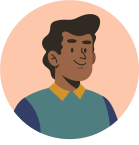

About Us
Our Team

Dr. Seyedahmad Rahimi
Director
Assistant Professor
College of Education
Seyedahmad Rahimi, Ph.D., is an Assistant Professor of Educational Technology in the School of Teaching and Learning at the University of Florida. He is the director of Creative Learning through AI and Stealth Assessment in STEM (CLASS) Lab. Dr. Rahimi's research focuses on assessing and fostering students' 21st-century skills (e.g., creativity) and STEM-related knowledge acquisition (e.g., physics understanding).
Graduate Assistants
Deniz Celik
Ph.D. Student,
EdTech program
College of Education
Salah Esmaeili
Ph.D. Student,
EdTech program
College of Education
Ran Gao
Ph.D. Student,
EdTech program
College of Education
Maryam Babaee
Ph.D. Student,
EdTech program
College of Education
Former Lab Members
Supharoek (Benz) Keawphonkrang
MAE Student, EdTech program
College of Education